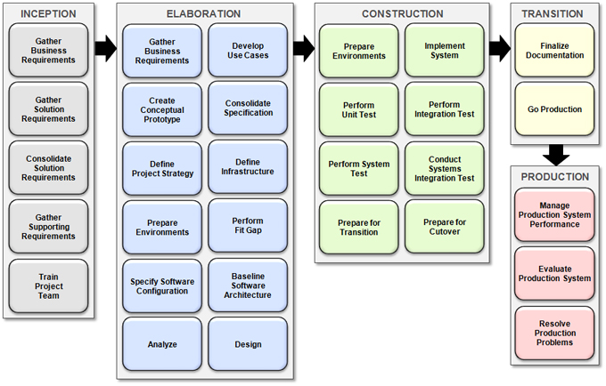

OUM |
WebCenter Supplemental Guide |
||
Method Navigation |
Current Page Navigation |
||
|
|
||||||||
WebCenter project engagements require only a subset of the full list of tasks included within OUM. The WebCenter Supplemental Guide has been developed in order to provide technology-specific guidance for all WebCenter components. When using OUM on your project engagement, it is important to let the method serve you, that is, only select the appropriate tasks that you need.
In most cases, WebCenter project engagements align to the OUM Core Workflow focusing on the activities including the following processes:
In some cases, it is necessary to include additional activities and tasks. For example, you would only require functional prototyping tasks (IM.070) if the project specifically requires such a prototype. The WebCenter Supplemental Activity Guidelines identifies such tasks as option (O) in order to help you identify such tasks. This guidance allows you to quickly and effectively identify the required tasks for your engagement.
The WebCenter Activity Core Workflow has been created to identify the core activities within the Implement focus area that should be considered on WebCenter projects. This view should serve to accelerate the understanding of OUM for WebCenter by new practitioners and help to keep the project teams focused on these activities.
There may only be a subset of tasks that need to be performed for each activity when working on a WebCenter project. These tasks are identified in the associated Supplemental Task Guidelines for each phase.


Use cases identify and describe the possible sequences of interactions between the system and its actors, in relation to a specific goal. They describe the interaction between the primary actors, i.e., Consumers, Contributors, Administrators, and the system itself, i.e., Web sites, Portals, etc.
Use cases should be represented in simple sequences that will lead to the WebCenter solution. When writing a use case you must avoid using technical jargon and use the Actor as the audience. Use Cases describe the system from the Actors point of view. There are many possible system use cases for all WebCenter products. Some possible system use cases are listed below:
WebCenter Content
WebCenter Portal
Important OUM tasks for documenting use cases include:
Additional information about Oracle WebCenter can be found online:

Copyright © 2006, 2016, Oracle and/or its affiliates. All rights reserved.